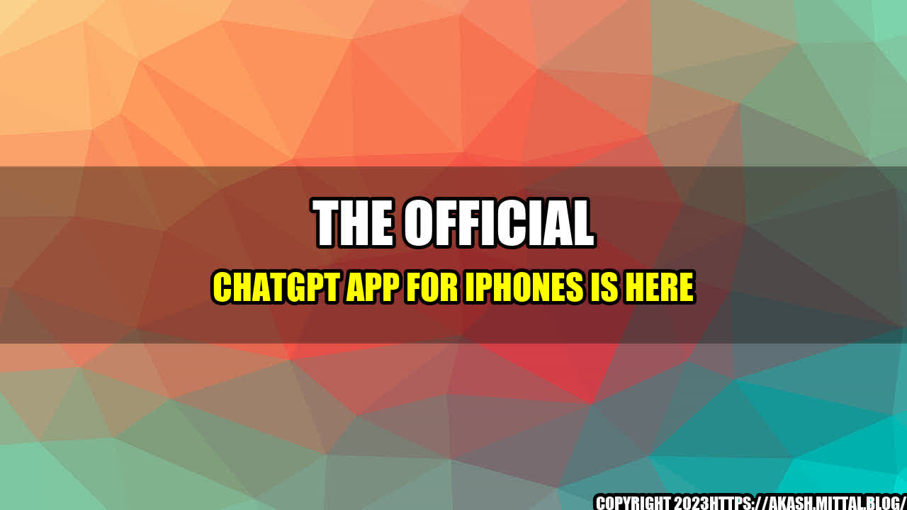

The Official ChatGPT App for iPhones Is Here!
Are you tired of switching between different social media apps to stay in touch with your friends and family? Do you wish there was a single platform where you could chat with anyone, anytime, without any hassle? If so, then the new ChatGPT app for iPhones is the solution you've been waiting for!
When the founders of ChatGPT started their journey, they had a simple yet powerful idea - to create a chat platform that connects people across the globe, irrespective of their language, culture or location. They wanted to make conversations more meaningful, more engaging and more accessible to everyone. After months of brainstorming, designing and coding, they finally launched ChatGPT as a web-based platform, and soon it became a hit among people who valued quality conversations over mere connections.
However, they realized that in today's mobile-first world, people prefer apps over websites, especially when it comes to chatting. They also noticed that a majority of their users were using iPhones, and they had a hard time accessing ChatGPT on their mobile browsers. This gave them an idea - why not create a dedicated app for iPhones that offers the same seamless chatting experience as on the web?
And that's how the idea of the ChatGPT app for iPhones was born. The team worked tirelessly for months, improving the user interface, optimizing the performance, and adding new features that would make chatting even more enjoyable. They tested the app rigorously, taking feedback from beta testers and making improvements based on their suggestions. Finally, they were ready to launch the app, and it was one of the most anticipated releases of the year!
App Features
The ChatGPT app for iPhones offers a number of features that make it stand out from other chat apps:
- Simple and intuitive UI: The app has a clean and user-friendly interface that makes it easy for anyone to navigate and use.
- Seamless integration with web platform: If you are already a ChatGPT user, you can log in to the app using your web credentials and access all your chats, contacts, and messages from the web platform.
- Real-time translation: This feature is a game-changer, especially for those who chat with people from different countries and cultures. The app can translate messages in real-time, allowing you to understand and respond to messages in your preferred language.
- Multiple chatting options: You can chat with your contacts one-on-one, create chat groups, and even join public chat rooms on various topics!
- Personalization options: You can customize your profile, add a bio, change your avatar, and even set your own chat wallpaper!
- Secure and private: The ChatGPT app uses end-to-end encryption to protect your messages from prying eyes, and your personal information is never shared with third parties.
Benefits of Using the App
The ChatGPT app for iPhones offers several benefits that make it a must-have app for people who love to chat:
- Improved chatting experience: With its real-time translation feature, multiple chatting options, and customization options, the app offers a unique and enjoyable chatting experience that will keep you coming back for more.
- Accessible and convenient: You can access the app from anywhere, anytime, and chat with anyone you want. There's no need to switch between different social media platforms or browsers anymore!
- Secure and private: The app uses state-of-the-art encryption technology to safeguard your messages and personal information, ensuring that your chats are always secure and private.
- Personalization options: You can customize your profile, add a bio, change your avatar, and set your own chat wallpaper, making your chatting experience more personalized and fun.
- Affordable: The app is free to download and use, which means you can enjoy quality chatting without spending a dime.
Case Study
Let's take the case of John, a freelance designer who loves to travel and explore new places. John often works with clients from different countries and cultures, and sometimes language barriers can make it difficult for him to communicate effectively. Before he discovered ChatGPT, he used to rely on Google Translate to understand and respond to his clients' messages, which often led to miscommunications and delays.
However, once he started using the ChatGPT app, he noticed a significant improvement in his communication with his clients. The real-time translation feature allowed him to understand and respond to messages in his clients' preferred language, and he could even chat with multiple clients at the same time, without any confusion. He also liked the fact that he could customize his profile and add a bio, which made it easier for his clients to know more about him and his work.
Overall, John was very impressed with the ChatGPT app and would recommend it to anyone who values quality communication and collaboration.
Conclusion
In conclusion, the ChatGPT app for iPhones is a great solution for people who want to chat with anyone, anywhere, anytime, without any hassle. With its real-time translation feature, multiple chatting options, and customization options, the app offers a unique and enjoyable chatting experience that will keep you coming back for more. It's also secure, private, and affordable, making it a must-have app for anyone who loves to chat!
- Easy-to-use interface and real-time translation
- Improved chatting experience and increased accessibility
- Secure and private with customization options
Curated by Team Akash.Mittal.Blog
Share on Twitter Share on LinkedIn